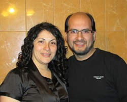
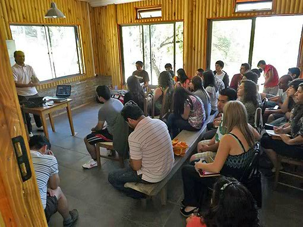
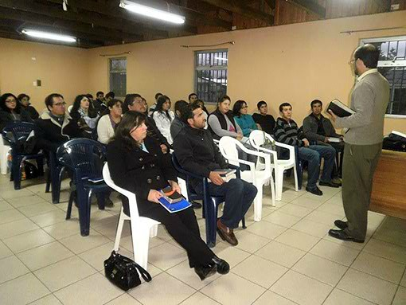

Mi nombre es Adiel Quiñelén V, en el ámbito profesional soy Profesor Licenciado en Educación Básica con Mención en Inglés, casado con mi esposa Jessica, tenemos 2 hijos, Josías y Silet y vivimos en la ciudad de Laja, 8º región, Chile.
En el ámbito espiritual he realizado algunos estudios teológicos y ahora estoy becado por el Instituto Vida Nueva para el Mundo para terminar una Licenciatura en Teología. A los 11 años el Señor me salvó en su gracia y misericordia, desde ahí comencé a asistir a la iglesia. Soy hijo de pastor y desde siempre he tenido la bendición de estar rodeado de cristianos.
Hace algunos años comencé a escuchar al Pastor Armando, quién me llamó la atención gratamente por el hecho de exponer la Palabra del Señor de una manera diferente a la que estaba acostumbrado, el conocimiento y la diversidad de temas fue lo que me llevó a interesarme aún más por la Biblia. Estamos muy agradecidos por este siervo de Dios porque fue el instrumento que Dios utilizó para cambiar nuestra perspectiva de la Biblia y del cristianismo.
En este momento estoy trabajando en Vida Nueva para el Mundo en Chile, soy Pastor y Representante del ministerio y creemos que la única herramienta que Dios nos da para llevar a cabo su propósito es la exposición de la Palabra del Señor, de hecho hemos sido testigos de cómo el Señor añade a su iglesia los que han de ser salvos, como lo dijo Lucas al escribir el libro de los Hechos, y a la vez esos salvos comienzan a manifestar la necesidad de instruirse en la Biblia. Estamos preparando a todos nuestros hermanos, jóvenes, mujeres, niños, etc. Enseñamos la Biblia expositivamente y creemos firmemente que esto ha traído a nuestra iglesia un crecimiento no solo numérico sino además en madurez que es lo más importante.
Nuestras oraciones son permanentemente que el Señor salve a aquellos que en su propósito eterno fueron escogidos por él, según su beneplácito y voluntad.
Nos encontramos en:
Pasaje los Alisos 498, Población Pedro de Valdivia 2,
Laja, Región del Biobío, Chile.
Reunión general:
Sábado 8:00 p.m.
Estudio bíblico:
Jueves 8:00 p.m.
Reunión de oración:
Lunes 8:00 p.m.
Teléfono:
+56 (9) 8819 6533
Correo:
laja@vnpem.org.mx
Estamos para servirles
Saludos desde Chile
 